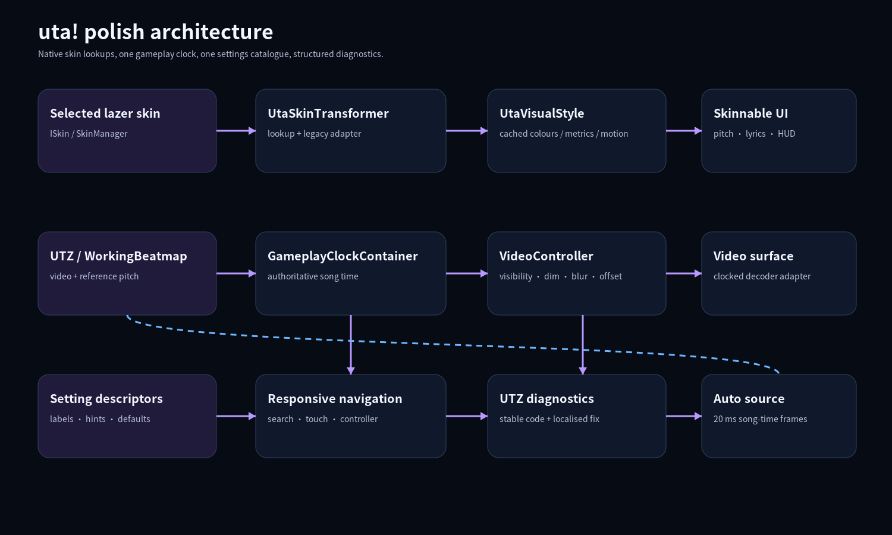
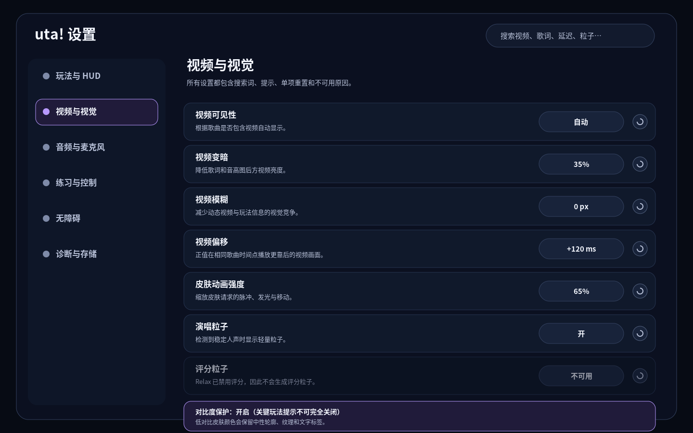
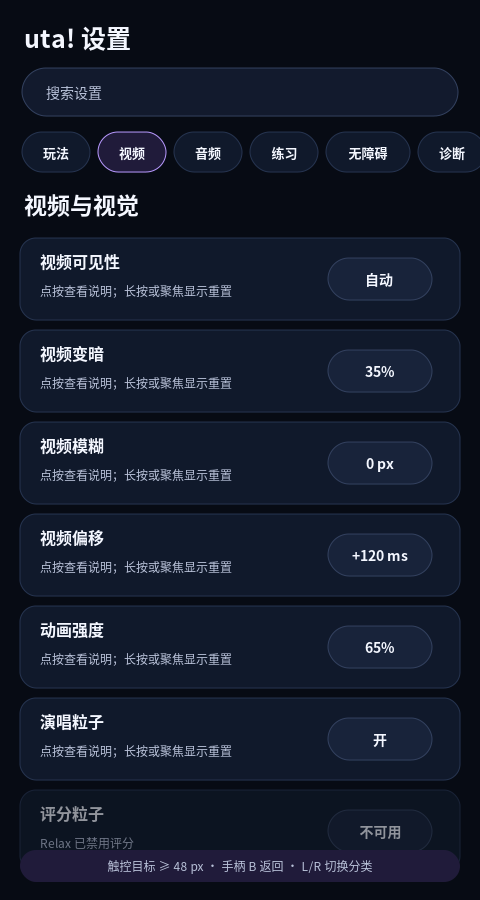
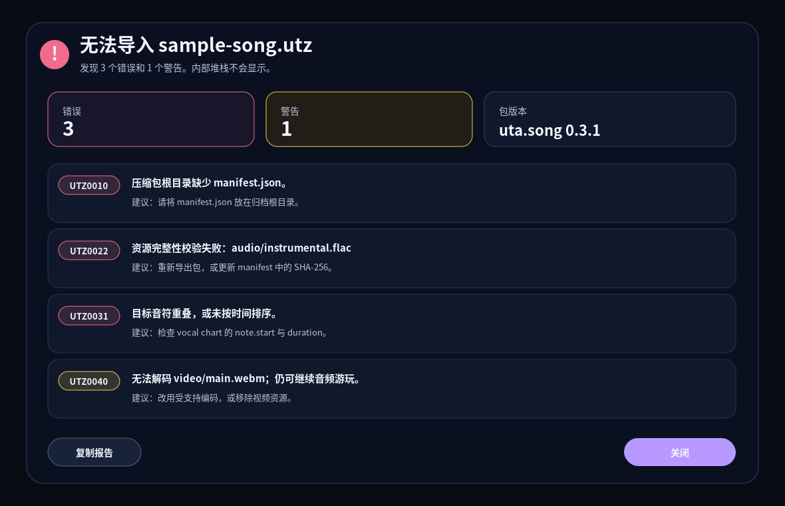

设计版本： 1.0
目标基线： bintis/uta-ruleset main，commit ce7fd7d0d571c7d1c52f89265209d1d0761cf449，ruleset 0.7.2
交付皮肤： uta! Prism 1.0.0
核心约束： 不引入 uta! 独立皮肤包格式；运行时全部通过 lazer 原生 ISkin / SkinTransformer / texture / config lookup 完成。

本方案把这组需求拆成五条彼此解耦、但共享数据契约的主线：
UtaSkinTransformer 增加 uta!-specific component lookup；连续曲线仍由 ruleset 自己绘制，皮肤提供画刷、颜色、线宽、虚线模式、间距和动画参数。这样不会为了皮肤把每段曲线变成 Drawable，也不需要新建一种皮肤包。GameplayClockContainer 的 song time 为唯一权威。视频控制不能只操作 decoder；暂停、跳转、循环和速度变化必须先作用于 gameplay clock。UtaSettingDescriptor 元数据，标签、提示、搜索词、默认值、重置策略、可用条件和禁用原因只定义一次。.utz 校验不再只抛带自由文本的 InvalidDataException；每个问题产生稳定 code、严重性、包内相对路径、localisation key 和修复建议。UI 永远不显示 stack trace、异常类型或绝对文件路径。当前 Skinning/UtaHudController.cs 的 transformer 只处理 lazer 的全局 HUD 容器，并把 osu! 通用 HUD 项过滤成 uta! 需要的集合。它没有 uta!-specific lookup，也没有读取 uta! 纹理、颜色、线宽、间距或 motion token。
当前玩法视觉的大多数值直接写在 UI 类中：
UtaPitchGuide 固定面板高度、playhead 位置、grid line weight、target note 高度和评分颜色。UtaPitchCurveGraph 固定 reference/live 颜色和线宽。UtaPitchGuideTrail 固定 glow、轨迹宽度和相似度颜色。UtaLyricsDisplay 固定字体枚举、字号、颜色、位置和行距。UtaScoringHud、UtaPracticeHud 固定面板尺寸、背景、accent、圆角和文本层级。因此第一步不是“加载一套新格式”，而是把硬编码值集中为 UtaVisualStyle，再由 native skin lookup 提供覆盖值。
UTZ model 已包含 visuals.video 和 video_offset_seconds，转换器也会把 video asset 复制到 .osz 并写入 video event；但 event 仍从 0 开始，offset 没有进入 UtaBeatmapMetadata 或运行时 controller。当前 Quick Settings 只有通用 background dim/blur，没有 ruleset-aware video visibility、offset、fit 和同步控制。
osu!framework Video 会跟随其 drawable clock，但其 decoder 自动 hard seek 的容忍窗口较大。对很短的 A-B backward loop，单纯改 PlaybackPosition 不能作为严格同步保证。因此设计引入 IUtaVideoSurface.ForceSeek() 抽象：优先推动 framework 暴露显式 seek；ruleset-only 版本必须在 backward discontinuity 时重建 decoder surface，而不是允许画面等待自然追赶。
当前全局设置通过两个 FillFlowContainer Hide/Show 模拟两级页面；游戏内设置则由固定宽度右侧 overlay 和多种 Settings* / Player* 控件混合构成。很多标签和 tooltip 仍是 C# 里的英文 literal；Score HUD 与 Practice HUD 已有三语表，但其他面板没有统一资源层。
当前 import handler catch 所有异常后把 ex.Message 直接放进通知，同时完整异常进入 log。UtzPackage 已有良好的安全边界和很多校验点，但所有校验最后都压成同一种 InvalidDataException 文本，无法稳定定位、翻译、聚合或给出结构化修复建议。
当前 Auto 在活动音符期间把目标 MIDI 写入 live HUD bindable；它不读取 charts.pitch_track / analysis.pitch_evidence，也没有把 frame-level synthetic pitch 作为确定性评分输入。新实现必须把“演示曲线”和“回归测试输入”统一成同一个 reference source。
使用三类 lazer 原生能力，职责清晰分离：
| 层 | 用途 | 例子 |
|---|---|---|
GetDrawableComponent() |
可替换的完整 UI 或反馈层 | Lyrics、Score HUD、Practice HUD、Judgement Feedback Layer、Particle Layer |
GetTexture() |
高频 primitive 的纹理/画刷 | target note、playhead、grid tile、curve brush、particle sprite |
GetConfig() |
颜色、线宽、间距、圆角、动画强度 | UtaSkinColour、UtaSkinMetric、UtaSkinMotion |
连续 Pitch curve 不允许每个采样点做 drawable lookup。UtaPitchCurveGraph 继续用 Path 批量绘制，skin 只提供 curve role 的 brush texture、colour、weight 和 dash pattern。
建议新增：
UtaSkinComponentLookup(UtaSkinComponents component)
UtaTargetNoteLookup(UtaScoringNoteKind kind, UtaTargetVisualState state)
UtaCurveLookup(UtaCurveRole role)
UtaGridLookup(UtaGridRole role)
UtaScoringFeedbackLookup(UtaNoteGrade grade, UtaPitchFault faults)
配置使用三个 enum：
UtaSkinColour
UtaSkinMetric
UtaSkinMotion
解析结果一次性写入 immutable UtaVisualStyle。当前 ISkin.GetConfig() 的 bindable 不应被当成实时更新源；换 skin 时重建 style 和 skinnable host，普通 gameplay update 不再访问 skin store。
Drawable component。uta-skin-marker，启用 legacy .osk adapter，并按 uta-* texture 名称构造默认 uta! drawable。null 表示“该 skin 没有提供”，继续 fallback。可选 component 若返回 Drawable.Empty()，表示 skin 明确关闭该装饰层。关键 gameplay cue 不允许被完全关闭。
关键组件： target notes、live Pitch curve、playhead、current lyrics、scoring fault text。即使 skin 缺失、返回空 drawable 或颜色对比不足，ruleset 仍保留最小高对比 outline、pattern 或文字标签。
可选组件： grid、guide trail、singing particles、scoring particles、panel decoration。可安全省略或由 skin 显式关闭。
目标音符示例：
uta-target-note-{kind}-{state}
-> uta-target-note-{kind}
-> uta-target-note-normal
-> built-in vector capsule
评分反馈示例：
skin drawable UtaScoringFeedbackLookup
-> uta-feedback-{grade}
-> built-in icon + localised grade/fault text
字体示例：
skin requested bundled alias
-> Torus
-> framework glyph fallback
不允许从 .osk 动态加载任意字体文件。这样可以避免缺字、平台差异和不可信字体解析问题；本交付包也不包含字体文件。
140-260 px，默认 180 px。12-64 px，narrow window 下自动减小。0.25，安全范围 0.15-0.40。0.75-2.5 px，minor grid 0.5-1.5 px。6-18 px；border 1-4 px；最小宽度 16 px。2.25 px 蓝色实线。3.25 px，比 reference 至少粗 1 px。1.5-6 px、live 2-8 px。playhead 是关键时间定位 cue：
3:1 非文本对比。UtaSkinComponentLookup(Lyrics) 替换。普通模式：
Reduced Motion：
皮肤颜色先作为“请求色”进入 UtaAccessiblePaletteResolver，再生成实际使用色。保护规则：
4.5:1；大字至少 3:1。3:1。Prism palette 对默认 pitch panel 的主要关键颜色均超过 6.5:1；详细结果在 design/contrast-report.json。
测试必须覆盖 protanopia、deuteranopia、tritanopia snapshot，并做灰度检查。通过标准不是“颜色看起来不同”，而是关键信息在模拟图中仍能由形状、线型或标签识别。
扩展 UtaBeatmapMetadata，保持旧包兼容：
string? VideoFile
double VideoOffsetMilliseconds
string? ReferencePitchFile
string? ReferencePitchFormat
转换器把 visuals.video.path、video_offset_seconds 和 reference pitch asset path 写入 metadata。正 offset 定义为：
expectedVideoPosition = gameplaySongTime + packageVideoOffset + userVideoOffset
因此正值表示在相同 song time 播放视频更靠后的帧。
UtaVideoController
-> IUtaVideoSurface
PlaybackPosition
IsPlaying
Buffering
ForceSeek(time)
ReplaceSource(streamFactory)
-> dim overlay
-> blur container
-> visibility / fit state
Controller 不拥有独立播放时间。它只把 gameplay clock 状态投影到 video surface。
ForceSeek(expected)。ForceSeek(expected)。0-90%。0-30 px；硬件不支持时禁用并解释原因。-5000..+5000 ms，step 10 ms，单项 reset 回 package offset。UTZ0040 warning。
第一级为六个 category：
第二级为 category page。Desktop 宽度显示左侧 category rail；中等宽度变为顶部 tab/pill；narrow window 使用横向可滚动 category chip 和全宽 setting row。
每项设置必须有：
id
category
labelKey
descriptionKey
searchTerms
defaultValue
value formatter
reset behaviour
availability predicate
disabledReasonKey
accessibilityNameKey
quickPanelEligibility
Global Settings 与 Quick Settings 仅是两个 renderer，共用同一 descriptor。这样可以消除同一设置在两个页面标签、tooltip、默认值和禁用逻辑不一致的问题。
disabledReasonKey。搜索索引包含 label、description、setting id、英文/中文/日文 keywords、常见简称，如 mic、MV、BGM、latency。结果保留 category breadcrumb，并支持直接 reset。

<560 px：单列，touch target 默认不小于 48 px；Large Touch Targets 为 56 px。560-839 px：顶部 category tabs + 单列/双列混合。>=840 px：左 rail + content。资源目录：
Resources/Localisation/en.json
Resources/Localisation/ja.json
Resources/Localisation/zh-CN.json
fallback：exact locale -> language family -> English -> key。所有 placeholder 在 build/test 中校验数量和名称一致。
迁移规则：
Description attribute、button text、diagnostic row、notification text 不得再直接出现 user-facing literal。ToString()。本交付的 design/localisation/ 已给出 English、Simplified Chinese、Japanese 基础覆盖。
.utz Import Diagnostics
UtzDiagnostic
Code
Severity
MessageKey
PackageRelativePath
RemediationKey
Arguments
Validation 层抛 UtzValidationException 或返回 UtzValidationResult；UI 不读取原始 exception message。完整异常仍可写 log，但 UI 只显示稳定 code 与 localised message。
UTZ0099 + incident ID；incident ID 与 log 对应，但 UI 不泄露内部细节。analysis.pitch_evidence。charts.pitch_track。frame-level 数据不应整段 base64 塞入 .osu metadata；metadata 只保存 asset path/format，runtime 从 beatmap storage 异步加载并构建 time-indexed source。
评分默认 bin 为 20 ms。Auto 在 song-time 上生成：
for t = lastGeneratedBin + 20ms .. currentSongTime step 20ms
sample reference source at t
apply transpose
submit UtaScoringFrame(t, pitch, clarity, voiced, epoch)
不要把 synthetic frame 伪装成麦克风 wall-clock capture，否则不同 playback rate、render frame rate 和暂停时机会改变 mapper 输出。新增 SubmitSynthetic(UtaScoringFrame)，只在 Auto path 使用，并同时更新 live HUD mailbox。
UtaVisualStyle。UtaSkinTransformer 增加 component/config lookup。.osk marker/texture adapter。IUtaVideoSurface、controller、dim/blur/fit/offset。.osk 导入成功；实现 lookup bridge 后所有命名资产可被命中。ToString()。.utz UI 无 stack trace、exception type 或 absolute path。Uta-Prism.osk：标准 osu! skin archive；包含 uta-* 1x/@2x runtime PNG。Uta-Prism-Skin-Source.zip：PNG、editable asset board、asset map、skin.ini。design/uta-prism.tokens.json：视觉 token 设计源，不是运行时皮肤格式。design/contracts/uta-skin-lookups.json：lookup、asset naming 与 fallback 契约。design/contracts/settings-catalog.json：完整 settings metadata 草案。design/contracts/utz-diagnostic-codes.json：稳定错误码与隐私规则。design/localisation/*.json：English、Japanese、Simplified Chinese 文案。design/mockups/*.svg：可编辑界面设计稿与 PNG 预览。implementation-scaffold/*.cs：实现对照类型，不是完整可编译 patch。重要限制：当前 main 分支尚未请求这些 uta-specific texture/component lookups。因此
.osk可以被 lazer 作为普通 skin 导入，但在 lookup bridge 合入前，uta! gameplay 不会自动使用这些自定义资产。